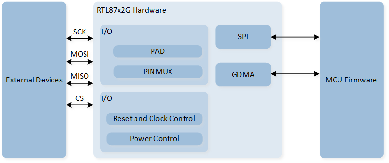
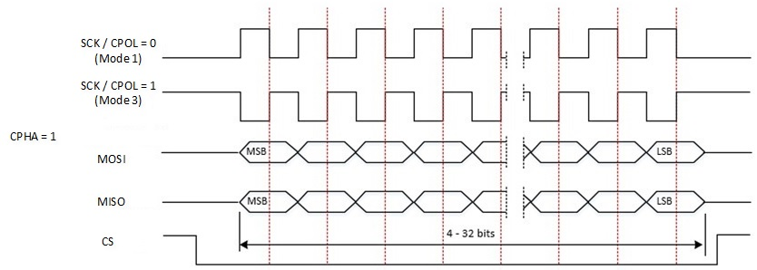
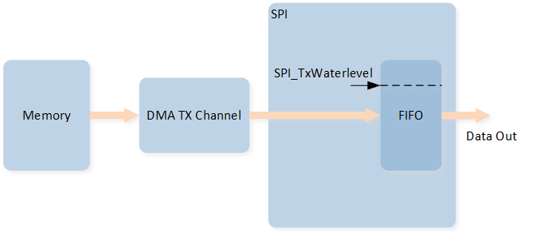
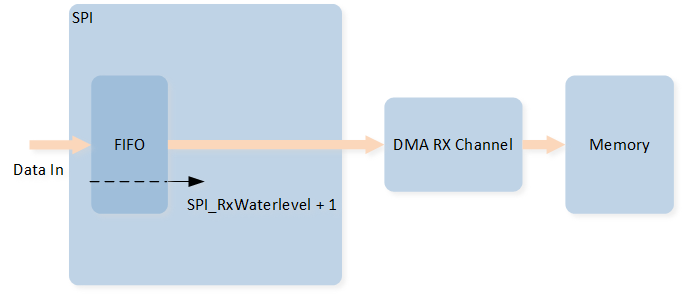

SPI
Sample List
This chapter introduces the details of the SPI sample. The RTL87x2G provides the following samples for the SPI peripheral.
Functional Overview
The serial peripheral interface (SPI) allows half/full-duplex, synchronous, serial communication with external devices. The interface can be configured in one of two modes of operations: as a serial master or a serial slave. In master mode, it provides the communication clock (SCK) to the external slave device. For RTL87x2G, SPI0 can be the master or slave, SPI1 is the master.
Feature List
SPI Master Feature List:
Support 4 Clock Mode. (CPOL, CPHA)
Mode 0 (CPOL=0, CPHA=0).
Mode 1 (CPOL=0, CPHA=1).
Mode 2 (CPOL=1, CPHA=0).
Mode 3 (CPOL=1, CPHA=1).
Max SPI0 SCK 50MHz; Max SPI1 SCK 20MHz.
SCK frequency= SPI source clock/N; N is any even value between 2 and 65534.
Supports 4 to 32 bits data frame.
TX FIFO depth 32.
RX FIFO depth 32.
Support GDMA.
SPI Slave Feature List:
Support 4 Clock Mode.(CPOL, CPHA)
Max input SCK 20MHz.
Support 4/8/16 bits data frame.
TX FIFO width 16 bits, depth 64.
RX FIFO width 16 bits, depth 64.
Support GDMA.
Block Diagram
Here is the block diagram of SPI. By invoking the MCU firmware, functions such as SPI TX/RX are implemented. The hardware achieves data interaction through MOSI and MISO, enabling communication with external devices.

System Block Diagram of SPI
Transfer Mode
SPI supports four transmission modes:
Full Duplex Mode
In full duplex mode, both the data transmission and reception logic are active. Therefore, attention must be paid to the logic of data transmission and reception during communication. Configure
SPI_InitTypeDef::SPI_DirectiontoSPI_Direction_FullDuplex.Transmit Only Mode
In transmit only mode, only the transmission logic is active, and the reception logic is inactive; received data will not be stored in the RX FIFO. Configure
SPI_InitTypeDef::SPI_DirectiontoSPI_Direction_TxOnly.Receive Only Mode
In receive only mode, only the reception logic is active, and the transmission logic is inactive. Configure
SPI_InitTypeDef::SPI_DirectiontoSPI_Direction_RxOnly.EEPROM Mode
EEPROM mode is typically used to send opcodes or addresses to EEPROM devices. In EEPROM mode, SPI first sends data until the TX FIFO is empty, then begins receiving data. During data transmission, the reception logic is inactive. During data reception, the transmission logic is inactive. Configure
SPI_InitTypeDef::SPI_DirectiontoSPI_Direction_EEPROM. In EEPROM mode, theSPI_InitTypeDef::SPI_RXNDFvalue must be set to determine the quantity of data to be received.
Communication Sequence Diagram
SPI supports 4 clock modes, corresponding to the four cases where CPOL and CPHA are 0 and 1.
Clock Polarity (CPOL) bit sets the polarity of the clock signal in idle state. 0 indicates low level, and 1 indicates high level.
Clock Phase (CPHA) bit sets the edge on which data is captured: 0 indicates the first edge, and 1 indicates the second edge.
The diagrams below illustrate the SPI communication timing for each of the four modes.

SPI Communication Sequence Diagram (CPHA is 0)

SPI Communication Sequence Diagram (CPHA is 1)
SPI Slave
When initializing and selecting the peripheral as SPI0_SLAVE, the SPI will be configured in slave mode. When SPI is configured as a slave, all serial transmissions are initiated and controlled by the serial bus master.
When using the SPI slave, pay attention to the following points:
CPHA and CPOL must be set the same as the master device.
If the SPI slave is to transmit data to the master, ensure that there is data in the TX FIFO before the serial master initiates the transmission. If the master initiates a transmission to the SPI slave without data in the slave's TX FIFO, the SPI status flag
SPI_FLAG_TXEwill be set.After the slave sends the last data frame and the TX FIFO becomes empty, the SPI master should not send clock requests for data from the slave, as the slave has no data to transmit. If the master continues to send clocks at this time, a TX FIFO underflow will occur, triggering the
SPI_INT_TUFinterrupt. The slave will repeatedly return a low level to the master.When the device is operating at high speed, it is recommended to use GDMA for transmission.
SPI High Speed Mode
SPI0 supports high-speed mode. When the SPI transmission rate exceeds 20MHz, it is recommended to use the high-speed mode of SPI0, and it is also recommended to use it with GDMA. In high-speed mode, the peripheral base address should be selected as SPI0_HS.
In high-speed SPI mode, it is recommended to use it with dedicated PADs. Some PADs can be configured to support the high-speed mode of designated peripherals. When using dedicated PADs, the PAD is fixedly assigned to a specified function and cannot be changed. The dedicated PADs for SPI0 are as follows:
PAD |
Function |
|---|---|
P4_0 |
SPI0_CLK |
P4_1 |
SPI0_MISO |
P4_2 |
SPI0_MOSI |
P4_3 |
SPI0_CSN |
When using SPI0 high-speed mode, the following configurations are required:
Call
Pad_Dedicated_Config()to enable the dedicated mode for the specified PAD.Call
Pinmux_HS_Config()to enable SPI0 high-speed mode.Additionally, configure BIT15 of the register at address 0x40002310 to 1 to use the high-speed mode properly.
When using dedicated PAD, there is no need to execute
Pad_Config()andPinmux_Config(). If manual control of the CS line is needed, thePad_Dedicated_Config()function can skip configuring the CS-related pins, andPad_Config()can be executed instead.Pad_Dedicated_Config(SPI_SCK_PIN, ENABLE); Pad_Dedicated_Config(SPI_MOSI_PIN, ENABLE); Pad_Dedicated_Config(SPI_MISO_PIN, ENABLE); Pad_Dedicated_Config(SPI_CS_PIN, ENABLE); Pinmux_HS_Config(SPI0_HS_MUX); *((volatile uint32_t *)0x40002310) |= BIT15;
The peripheral needs to use the base address of SPI0_HS, where
RCC_PeriphClockCmd()and GDMA Handshake still use the SPI0 related configuration.RCC_PeriphClockCmd(APBPeriph_SPI0, APBPeriph_SPI0_CLOCK, ENABLE); ... SPI_Init(SPI0_HS, &SPI_InitStructure); ... GDMA_InitStruct.GDMA_DestinationAddr = (uint32_t)SPI0_HS->SPI_DR; GDMA_InitStruct.GDMA_DestHandshake = GDMA_Handshake_SPI0_TX; ... SPI_Cmd(SPI0_HS, ENABLE);
Since the default clock source for SPI is 40M, and the minimum division factor for SPI is 2, the highest communication rate supported by SPI by default is 20M. If SPI0 wants to use a rate exceeding 20M, the clock source for SPI needs to be changed to a PLL clock source. For a detailed introduction to the PLL clock source, refer to Ultra-Fast PLL Clock.
The configuration to modify the clock source for SPI0 is as follows:
Call
pm_spi0_master_freq_set()to change the clock source to a specified PLL clock source and specify the output frequency. If the return value is 0, it indicates the clock source configuration was successful.Call
SPI_ClkConfig()to specify the SPI clock source and division factor.To configure SPI0 for an output frequency of 50MHz, you can specify the clock source as PLL1 at 100MHz, use a division factor of 1, and configure
SPI_InitTypeDef::SPI_BaudRatePrescalerto 2 to achieve a 50MHz SPI output frequency.To configure SPI0 for an output frequency of 40MHz, you can specify the clock source as PLL2 at 160MHz, use a division factor of 2, and configure
SPI_InitTypeDef::SPI_BaudRatePrescalerto 2 to achieve a 40MHz SPI output frequency.// Set SPI0 Clock Output Frequency to 50MHz. int32_t flag = pm_spi0_master_freq_set(CLK_PLL1_SRC, 100, 100); SPI_ClkConfig(SPI0, SPI_CLOCK_SRC_PLL1, SPI_CLOCK_DIVIDER_1); ... SPI_InitStructure.SPI_BaudRatePrescaler = 2; ... // Set SPI0 Clock Output Frequency to 40MHz. int32_t flag = pm_spi0_master_freq_set(CLK_PLL2_SRC, 160, 80); SPI_ClkConfig(SPI0, SPI_CLOCK_SRC_PLL2, SPI_CLOCK_DIVIDER_2); ... SPI_InitStructure.SPI_BaudRatePrescaler = 2; ...
SPI GDMA
SPI GDMA TX
During the SPI serial transmission process, when the amount of data in the TX FIFO is less than or equal to the value set in the initialization SPI_InitTypeDef::SPI_TxWaterlevel, a GDMA burst transfer will be triggered.
One GDMA burst transaction will write GDMA_InitTypeDef::GDMA_DestinationMsize pieces of data into the SPI TX FIFO.
When using SPI GDMA TX, it is recommended to set the value of SPI_InitTypeDef::SPI_TxWaterlevel to SPI_TX_FIFO_SIZE - MSize.

SPI GDMA TX Diagram
SPI GDMA RX
During the SPI serial transmission process, when the amount of data in the RX FIFO is greater than or equal to the value set in the initialization for SPI_InitTypeDef::SPI_RxWaterlevel + 1, a GDMA burst transfer will be triggered.
One GDMA burst transaction will receive GDMA_InitTypeDef::GDMA_SourceMsize pieces of data from the SPI RX FIFO.
When using SPI GDMA RX, it is recommended to set the value of SPI_InitTypeDef::SPI_RxWaterlevel to MSize - 1.

SPI GDMA RX Diagram